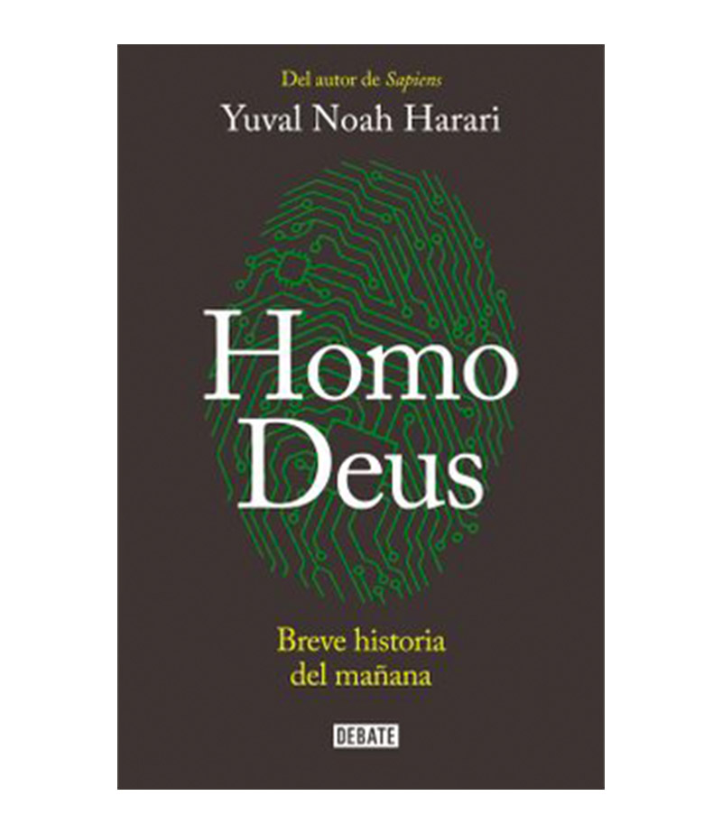
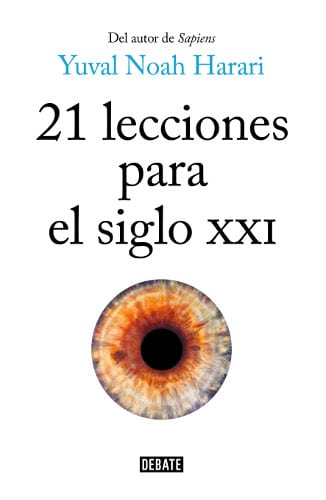
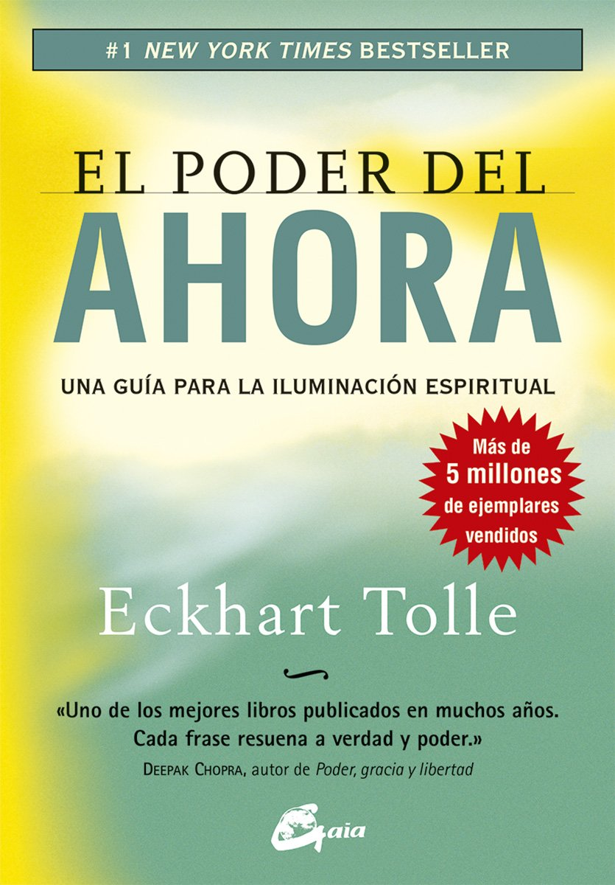

El homo sapiens gobierna el mundo porque es el único animal que puede creer en cosas que existen puramente en su propia imaginación, como los dioses, los estados, el dinero y los derechos humanos. Partiendo de esta idea provocadora, Sapiens redefine
la historia de nuestras especies desde una perspectiva completamente nueva. Explica que el dinero es el sistema más pluralista de confianza mutua nunca antes ideado; que el trato a los animales en la agricultura moderna es probablemente el
peor de los crímenes de la historia, y que aunque somos mucho más poderosos que nuestros antecesores, no somos mucho más felices.
Homo Deus - Una Breve Historia del Mañana

Homo Deus. Breve historia del mañana examina lo que podría acabar sucediendo cuando los mitos de la antigüedad entren en contacto con nuevas tecnologías de ilimitadas posibilidades, como la inteligencia artificial y la ingeniería genética. Sapiens:
Una breve historia de la humanidad describió cómo los seres humanos conquistaron el mundo gracias a su capacidad única para creer en mitos colectivos sobre dioses, dinero, igualdad y libertad. Homo Deus: Una Breve Historia del Mañana examina
lo que le podría suceder al mundo cuando en un futuro estos antiguos mitos se unan con nuevas tecnologías divinas como son la inteligencia artificial o la ingeniería genética.
21 Lecciones para el siglo XXI

En un mundo inundado de información irrelevante, la claridad es poder. La censura no funciona bloqueando el flujo de información, sino saturando a la gente de desinformación y distracciones. 21 lecciones para el siglo XXI atraviesa estas aguas
pantanosas y afronta algunas de las cuestiones más urgentes de la agenda global.
¿Por qué está la democracia liberal en crisis? ¿Ha vuelto Dios? ¿Estamos a las puertas de una nueva guerra mundial? ¿Qué implica la victoria de Donald Trump? ¿Qué podemos hacer con la epidemia de noticias falsas? ¿Qué civilización domina el mundo:
Occidente, China, el islam? ¿Puede el nacionalismo resolver los problemas de desigualdad y el cambio climático? ¿Qué deberíamos hacer con el terrorismo? ¿Qué deberíamos enseñar a nuestros hijos? Somos miles de millones las personas que apenas
podemos permitirnos el lujo de indagar en estas cuestiones porque tenemos cosas más urgentes que hacer: ir a trabajar, cuidar de nuestros hijos u ocuparnos de nuestros padres ya ancianos. Lamentablemente, la historia no hace concesiones. Si
el futuro de la humanidad se decide en nuestra ausencia, porque estamos demasiado ocupados dando de comer y vistiendo a nuestros hijos, ni los demás ni nosotros nos libraremos de las consecuencias. Esto es muy injusto, pero ¿quién dijo que
la historia es justa?
Un libro no proporciona alimento ni ropa a la gente, pero sí puede ofrecer cierta claridad y de esta manera contribuir a nivelar el terreno de juego global. Si esta obra empodera aunque solo sea a un puñado de personas para que se incorporen al
debate sobre el futuro de nuestra especie, habrá cumplido su cometido.
El Poder Del ahora

Para adentrarse en EL PODER DEL AHORA tendremos que dejar atrás nuestra mente analítica y su falso yo, el ego. Desde la primera página de este extraordinario libro nos elevamos a una mayor altura y respiramos un aire más ligero. Conectamos con
la esencia indestructible de nuestro Ser: "la Vida Una omnipresente, eterna, que está más allá de la miríada de formas de vida sujetas al nacimiento y a la muerte". Aunque el viaje es todo un reto, Eckhart Tolle nos guía usando un lenguaje
simple y un sencillo formato de pregunta-respuesta.